二值图像形态学运算
BW2 = bwmorph(BW, operation)
BW2 = bwmorph(BW, operation, n)
BW2 = bwmorph(BW, operation) 对二值图像 BW 应用特定的形态学运算，其中 operation 可以为bothat，branchpoints，bridge，clean，close，diag，endpoints，fill，hbreak，majority，open，remove，shrink，skel，spur，thicken，thin，tophat 其中之一。
BW2 = bwmorph(BW, operation, n) 应用 n 次运算。n 可以是 Inf，在这种情况下会一直重复运算，直到图像不再变化。
二值图像，指定为二维数值矩阵或二维逻辑矩阵。对于数值输入，任何非零像素都被视为 1 (true)。
operation — 要执行的形态学运算
字符向量 | 字符串标量
要执行的形态学运算，指定为下列项之一。
| 操作 | 描述 |
|---|---|
| bothat | 执行形态学“底帽”运算，返回原图像减去执行形态学闭运算之后得到的图像。bwmorph 函数使用邻域 ones(3) 执行形态学闭运算。如果要使用不同邻域执行形态学底帽运算，则请使用 imbothat 函数。 |
| branchpoints | 找到骨架的分支点。例如： 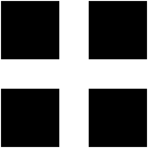 becomes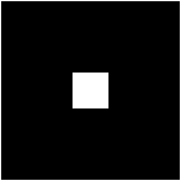 |
| bridge | 桥接未连通的像素，即如果 0 值像素有两个未连通的非零邻点，则将这些 0 值像素设置为 1。例如： 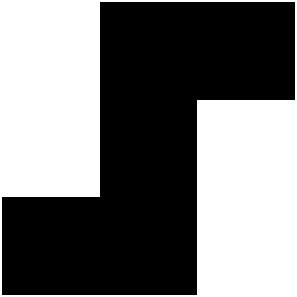 becomes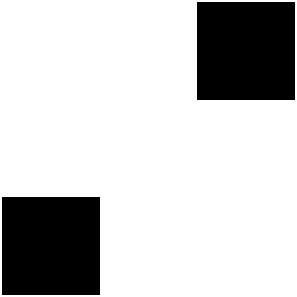 |
| clean | 删除孤立像素（由 0 包围的单个 1）。 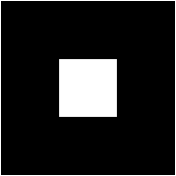 |
| close | 执行形态学闭运算（先膨胀后腐蚀）。 bwmorph 函数使用邻域 ones(3) 执行形态学闭运算。如果要使用不同邻域执行形态学闭运算，则请使用 imclose 函数。 |
| diag | 使用对角填充以消除背景的 8 连通。例如： 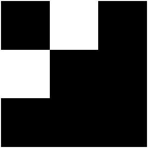 becomes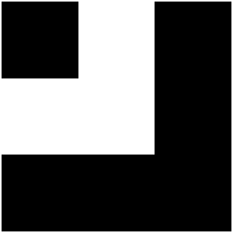 |
| endpoint | 找到骨架的终点。例如： 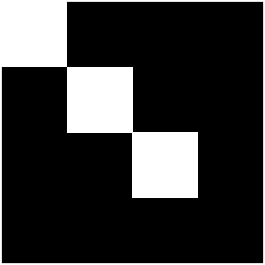 becomes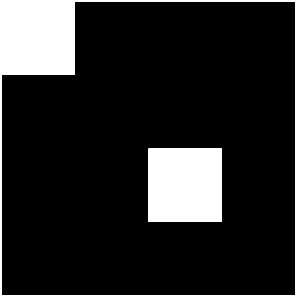 注意：要找到终点，图像必须骨架化。要创建骨架化图像，请使用 bwmorph(BW,"skel")。 |
| fill | 填充孤立的内部像素（由 1 包围的单个 0）。 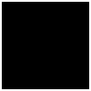 |
| hbreak | 删除具有 H 连通的像素。例如： 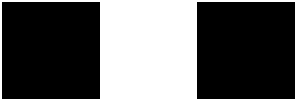 becomes |
| majority | 如果像素的 3×3 邻域中有 5 个或更多像素为 1，则将像素设置为 1；否则，将像素设置为 0。 |
| open | 执行形态学开运算（先腐蚀后膨胀）。bwmorph 函数使用邻域 ones(3) 执行形态学开运算。如果要使用不同邻域执行形态学开运算，则请使用 imopen 函数。 |
| remove | 删除内部像素。如果一个像素的所有 4 连通邻点均为 1，则此选项会将该像素设置为 0，因此只保留边界像素为 on。 |
| shrink | 使用 n = Inf，通过从对象边界删除像素，将对象收缩为点。使没有孔洞的对象收缩为点，有孔洞的对象收缩为每个孔洞和外边界之间的连通环。此选项保留欧拉数（也称为欧拉示性数）。 |
| skel | 使用 n = Inf，删除对象边界上的像素，而不允许对象分裂。其余的像素构成图像骨架。此选项会保留欧拉数。在使用三维体时，或当您要对骨架剪枝时，请使用 bwskel 函数。 |
| spur | 删除杂散像素。例如： 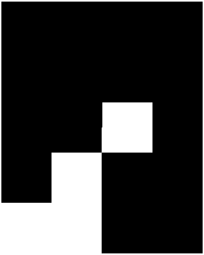 becomes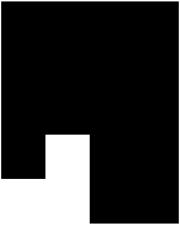 |
| thicken | 在 n = Inf 时，通过向对象外部添加像素来加厚对象，直到先前未连通的对象实现 8 连通为止。此选项会保留欧拉数。 |
| thin | 在 n = Inf 时，通过从对象边界删除像素，将对象收缩为线。使没有孔洞的对象收缩为具有最小连通性的线，有孔洞的对象收缩为每个孔洞和外边界之间的连通环。此选项会保留欧拉数。有关详细信息，请参阅算法。 |
| tophat | 执行形态学“顶帽”运算，返回原图像减去执行形态学开运算之后得到的图像。bwmorph 函数使用邻域 ones(3) 执行形态学开运算。如果您要对不同邻域执行形态学顶帽运算，则请使用 imtophat 函数。 |
执行运算的次数，指定为正整数或 Inf。当您将 n 指定为 Inf 时，bwmorph 函数会重复该运算，直到图像不再变化。
示例： 100
数据类型： single | double | uint8 | uint16 | int8 | int16
执行形态学运算后的图像，以二维逻辑矩阵形式返回。
数据类型： logical
[1] Haralick, Robert M, Linda G Shapiro. Computer and Robot Vision[M].Readingtown, Massachusetts: Addison-Wesley, 1992.
[2] Kong, T Yung, Azriel Rosenfeld. Topological Algorithms for Digital Image Processing, Amsterdam: Elsevier Science, 1996.
[3] Lam, L, Seong-Whan Lee, Ching Y Suen. Thinning Methodologies-A Comprehensive Survey. IEEE Transactions on Pattern Analysis and Machine Intelligence, 1992, 14(9): 879.
[4] Pratt, William K. Digital Image Processing, New Jersey, USA: John Wiley & Sons, 1991.
在北太天元图像处理工具箱 V1.0 推出